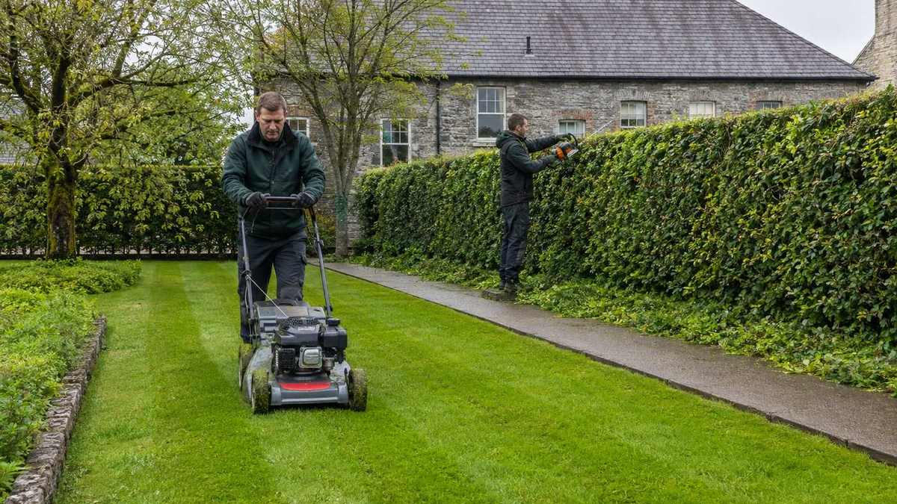

Home / Services
Grounds maintenance
Grounds kept presentable all year for business parks, estates and private properties across Limerick and Kerry.
Grounds are the first thing anyone reads
Overgrown grass, straggling hedges and weeds through the paving say something about a building before anyone reaches the door. It is the cheapest impression a premises makes, and the easiest one to lose.
Consistency beats intensity
Grounds that get cut whenever someone remembers spend half the year looking neglected. A scheduled visit costs less per year than the occasional emergency blitz, and the site never drops below presentable.
The Irish growing season is not gentle
Growth here is fast and long. Frequency needs to rise through spring and summer and taper into autumn - a fixed monthly visit either wastes money in winter or loses control in June.
How the job runs
In order, and in writing.
Walk the site
We look at what is actually there - aspect, drainage, access, what is growing and how fast.
Agree a frequency
Set to the site and the season, not a flat number that suits us.
Cut, trim, control
Grass, hedges, edges and weed control on each visit.
Clear as we go
Arisings removed unless you would rather they stayed on site.
Seasonal work
Autumn clear-downs and spring resets folded into the schedule.
Before you get quotes
What determines the price.
We do not publish figures, because a figure without a site visit is a guess. These are the variables that actually move the number - worth understanding whoever you end up using.
Area and terrain
Flat open lawn cuts far faster than banks, awkward corners and obstacles.
Frequency
More frequent visits cost less each, because there is less growth to fight.
Hedging
Height and length matter, and whether we need access equipment to reach the top safely.
Waste
Removing arisings costs more than leaving them; on larger sites it is often the biggest single variable.
Condition at the start
A site that has been let go needs a clearance before a maintenance schedule can begin. That is a one-off cost, not the ongoing rate.
When you don't need us
If you have a small domestic lawn and a working mower, you do not need a contractor - you need a dry Saturday. Grounds maintenance earns its cost on commercial sites, larger properties, rentals, or where you simply are not there often enough to keep on top of it.
Questions
Straight answers.
Do you offer ongoing contracts?
Yes. Contracts are common for business parks, estates and commercial properties, with visit frequency set to the site and the season.
Will you take on a site that has been let go?
Yes. Overgrown clearances are routine, including vacant properties and land being prepared for sale.
Do you remove the cuttings?
Yes, unless you would prefer them left on site - some clients want them retained.
Do you cover Kerry?
Yes, across Limerick and into Kerry.
Can you work outside business hours?
Yes, where a site needs it.
Where we work
Limerick and Kerry.
Based at the Old Creamery Enterprise Centre in Ardagh, Co. Limerick, working across the county and into Kerry.
Limerick City · Ardagh · Adare · Newcastle West · Rathkeale · Askeaton · Croom · Kilmallock · Abbeyfeale · Foynes · Patrickswell · Castleconnell · Caherconlish · Bruff · Dromcollogher · Pallaskenry · Glin · Shanagolden · Athea · Annacotty · Murroe · Cappamore · Tralee · Killarney · Listowel · Castleisland · Abbeydorney · Tarbert
Tell us what needs doing.
Free site visit, free assessment, itemised quote. No obligation either way.
Something urgent? Call - 24/7 emergency call-outs.